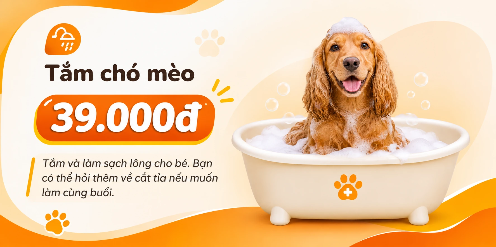
Bệnh viện thú y Pet24h Thạch Thất
Khám, điều trị và cấp cứu chó mèo tại Thạch Thất
Pet24h có dịch vụ bao gồm:
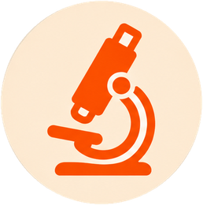
Xét nghiệm- Siêu âm
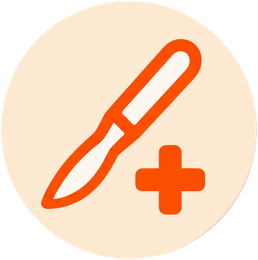
Phẫu thuật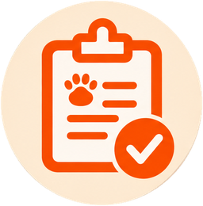
Theo dõi sau điều trị
Thời gian ưu đãi 30/10–30/11
Tại Pet24h Thạch Thất
Ba ưu đãi khi đưa bé đến Pet24h
Soi da, soi tai
Miễn phí
Kiểm tra da và tai nếu bạn thấy bé hay gãi, rụng lông hoặc có dấu hiệu bất thường ở tai.
Tầm soát sức khỏe tổng quát
399.000đ
Gói kiểm tra sức khỏe tổng quát cho chó mèo. Nhắn Zalo để Pet24h xác nhận các hạng mục trong gói trước khi đặt lịch.
Khi nào nên đưa
bé đi khám?
Khi liên hệ, bạn có thể mô tả dấu hiệu và thời điểm bắt đầu để bác sĩ nắm tình trạng ban đầu.
- Ăn uống và hành vi
- Bé đột ngột bỏ ăn, ủ rũ hoặc có biểu hiện khác thường.
- Tiêu hóa
- Bé nôn nhiều lần, tiêu chảy hoặc đi ngoài ra máu.
- Da và lông
- Bé ngứa kéo dài, viêm da hoặc rụng lông từng mảng.
Dịch vụ khám và chăm sóc chó mèo
Dịch vụ thú y toàn diện, an toàn và tận tâm cho thú cưng của bạn
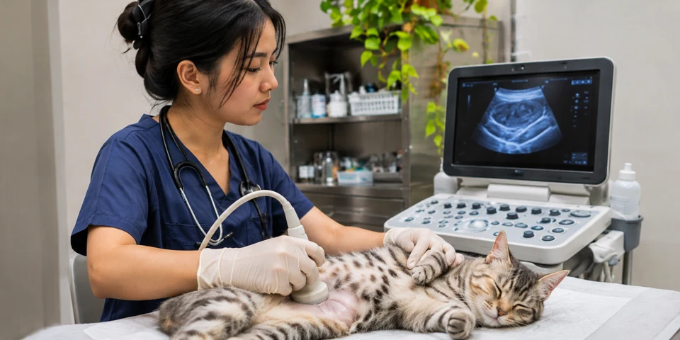
Khám và chẩn đoán
Kiểm tra tổng quát, xét nghiệm, siêu âm, X-quang và tư vấn điều trị phù hợp.
Nhận Tư VấnĐiều trị nội khoa và lưu trú
Điều trị các bệnh nội khoa, chăm sóc và theo dõi tại viện với môi trường an toàn.
Nhận Tư VấnPhẫu thuật
Thực hiện các phẫu thuật từ cơ bản đến chuyên sâu với trang thiết bị hiện đại và an toàn
Nhận Tư Vấn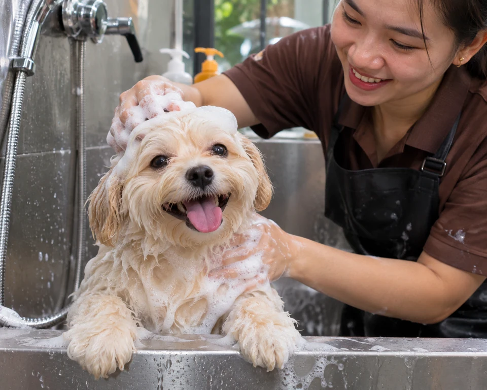
Tắm, vệ sinh và cắt tỉa
Tắm sạch, vệ sinh tai – mắt – móng và cắt tỉa lông gọn gàng, giúp bé luôn sạch sẽ, khỏe mạnh và thơm tho.
Nhận Tư Vấn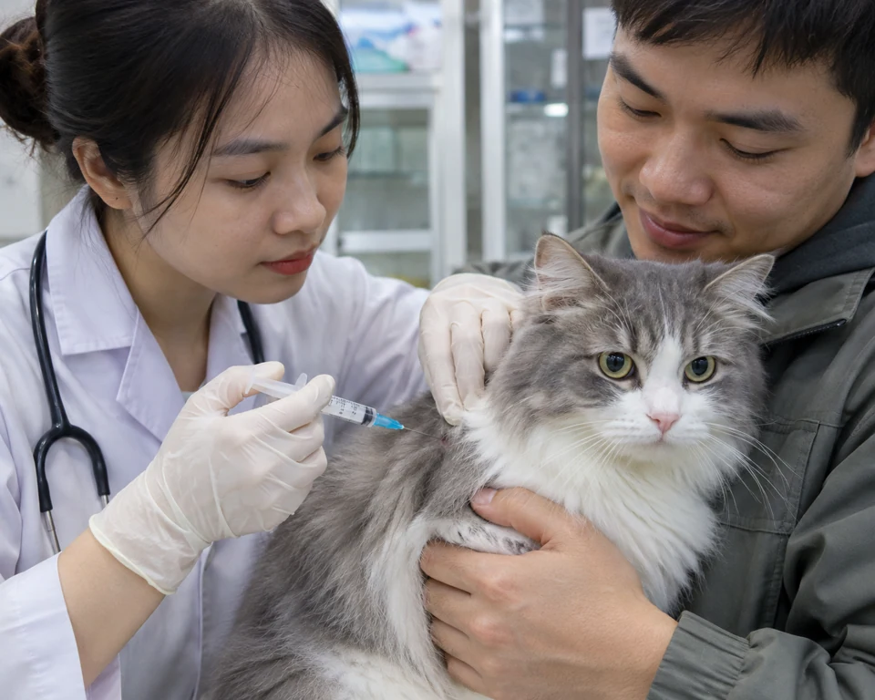
Tiêm phòng và tẩy giun
Tiêm vắc-xin phòng bệnh và tẩy giun định kỳ, giúp tăng sức đề kháng và phòng ngừa các bệnh nguy hiểm.
Nhận Tư VấnCấp cứu chó mèo
Nếu bé khó thở, đang co giật, bụng chướng đột ngột, gặp tai nạn nghiêm trọng hoặc mèo rặn tiểu mà không ra nước tiểu, hãy tìm cơ sở cấp cứu thú y ngay.
Pet24h tiếp nhận ca cấp cứu, gồm cả ngộ độc, với máy theo dõi, máy truyền dịch và thiết bị hỗ trợ oxy. Gọi để báo tình trạng và xác nhận khả năng tiếp nhận.
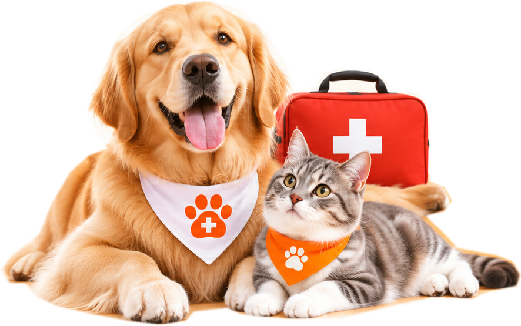
Gọi cấp cứu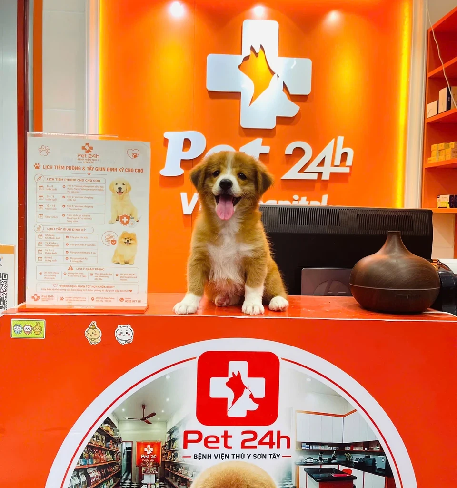
Vì sao chọn Pet24h?
Chẩn đoán có căn cứ
Bác sĩ dựa trên kết quả thăm khám và xét nghiệm khi cần để chọn hướng điều trị phù hợp.
Biết dự toán trước khi đồng ý
Bác sĩ giải thích phác đồ và các khoản chi phí dự kiến để bạn quyết định.
Được theo dõi cả khi bé về nhà
Pet24h cập nhật tình trạng trong lúc điều trị, hướng dẫn chăm sóc, gọi điện hỏi thăm và hẹn tái khám khi cần.
Quy trình khám và điều trị
Tiếp nhận
Đặt lịch qua Zalo, gọi hotline hoặc đến trực tiếp.
Thăm khám
Bác sĩ thăm khám và chỉ định kiểm tra khi cần.
Thống nhất phác đồ
Trao đổi hướng điều trị và dự toán chi phí.
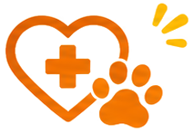
Điều trị và theo dõi
Điều trị, hướng dẫn chăm sóc và theo dõi sau điều trị.
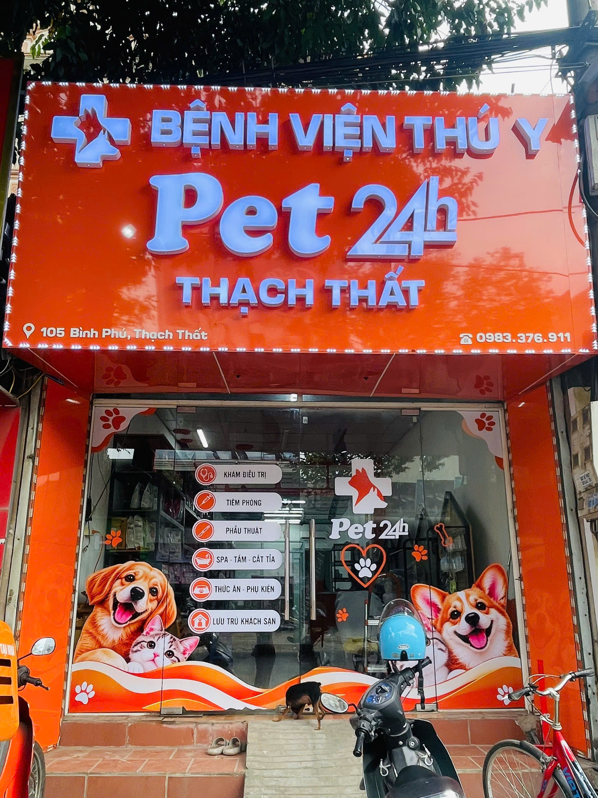
Đặt lịch đưa bé đến Pet24h
Nhắn Zalo để chọn ưu đãi hoặc đặt lịch khám. Cho Pet24h biết bé là chó hay mèo, dịch vụ bạn cần hoặc triệu chứng đang gặp và giờ dự kiến đến.
Bệnh viện thú y Pet24h Thạch Thất105 Bình Phú, Thạch Thất
Hotline và Zalo 0983376911